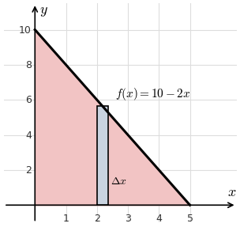

Lesson 8: The Shell Method
A shell is the region between two cylinders with radii \(R\) and \(r\), both with height \(h\).
\[
\begin{aligned}
V &= \pi R^2 h - \pi r^2 h \\
&= \pi h(R - r)(R + r) \\
&= 2\pi\left(\frac{R + r}{2}\right)h(R - r) \\
&= 2\pi\,(\text{average radius})(\text{height})(\text{thickness})
\end{aligned}
\]
- Average radius: \(x_k\)
- Height: \(f(x_k)\)
- Thickness: \(\Delta x\)
The Shell Method (about the y-axis)
\[ V = \int_a^b 2\pi x\,f(x)\,dx \]
Use the shell method to find the volume of the solid obtained by revolving about the \(y\)-axis the region under \(f(x) = 10 - 2x\) over \(0 \le x \le 5\).
\[
\begin{aligned}
V &= \int_0^5 2\pi x(10 - 2x)\,dx \\
&= 2\pi\int_0^5 \left(10x - 2x^2\right)dx \\
&= 2\pi\left[5x^2 - \frac{2x^3}{3}\right]_0^5 \\
&= 2\pi\left(125 - \frac{250}{3}\right) \\
&= \frac{250\pi}{3}
\end{aligned}
\]
Check: the solid is a cone with radius 5 and height 10, and \(\frac{1}{3}\pi(5)^2(10) = \frac{250\pi}{3}\).
